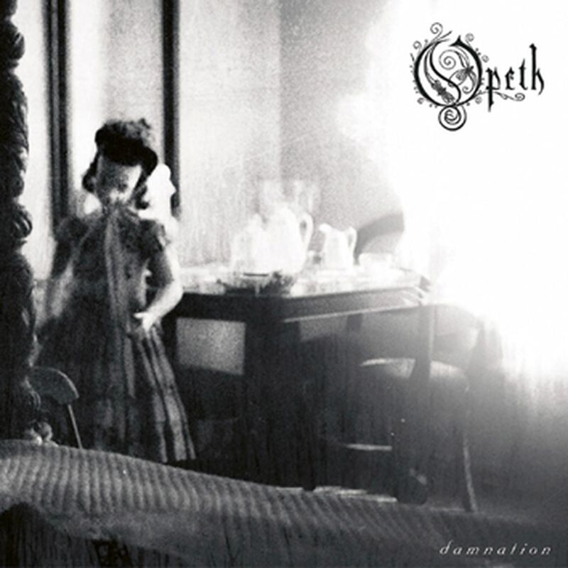

Kuvaa klikkaamalla pääset kuuntelemaan albumia Youtubesta!
Vuonna 2003 julkaistu Damnation-albumi oli ensimmäinen Opethin albumi, joka ei sisältänyt ollenkaan death metal -genreen liittyviä asioita. Albumi on täysin progressiivista rokkia sekä puhtaita vokaaleja sisältävä albumi. Kaikkien yllätykseksi Damnation-albumi oli erittäin pidetty jopa vain death metallia kuuntelevien fanien keskuudessa.
Lista albumin biiseistä:
1. Windowpane
2. In my Time of Need
3. Death Whispered a Lullaby
4. Closure
5. Hope Leaves
6. To Rid the Disease
7. Ending Credits
8. Weakness